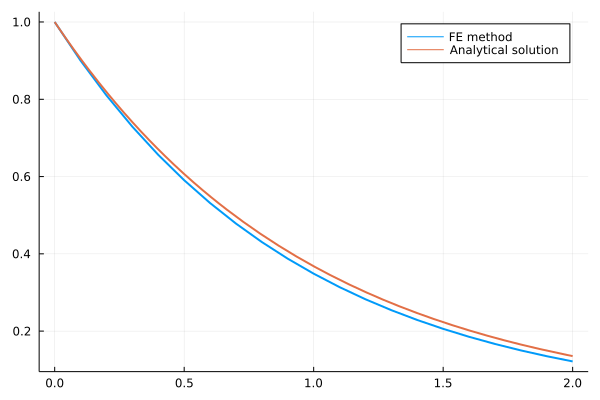
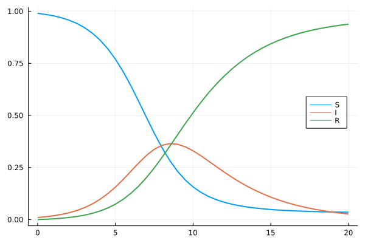
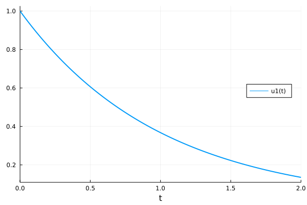
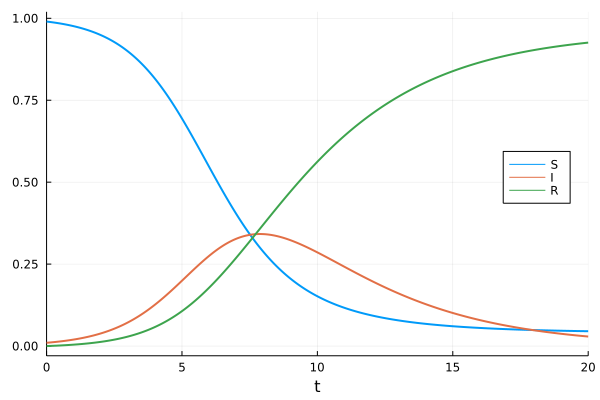
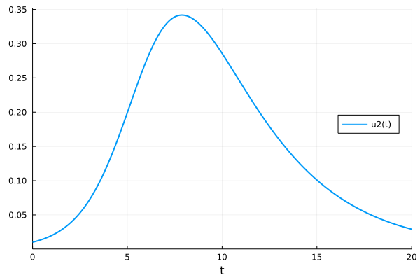
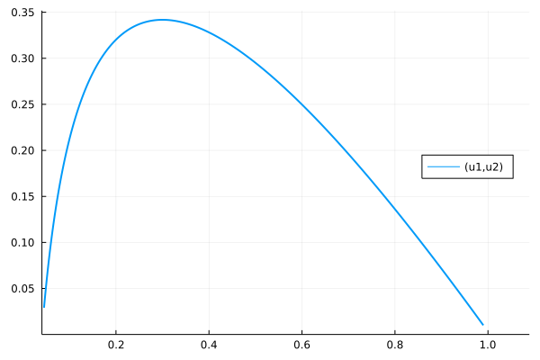
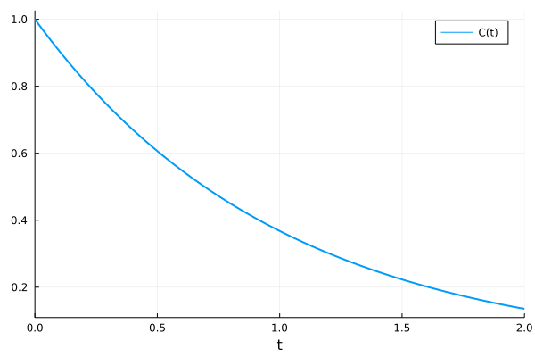
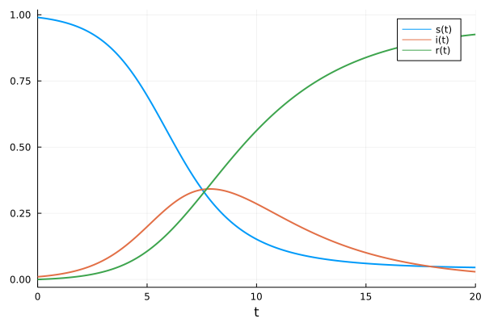
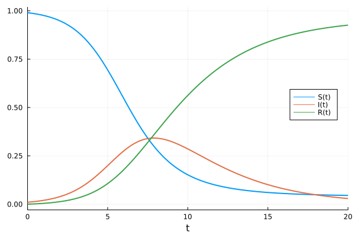

Solving differential equations in Julia
Contents
Solving differential equations in Julia#
Define your model and find parameters#
The concentration of a decaying nuclear isotope could be described as an exponential decay:
State variable
\(C(t)\): The concentration of a decaying nuclear isotope.
Parameter
\(\lambda\): The rate constant of decay. The half-life \(t_{\frac{1}{2}} = \frac{ln2}{\lambda}\)
Take a more complex model, the spreading of an contagious disease can be described by the SIR model:
State variables
\(S(t)\) : the fraction of susceptible people
\(I(t)\) : the fraction of infectious people
\(R(t)\) : the fraction of recovered (or removed) people
Parameters
\(\beta\) : the rate of infection when susceptible and infectious people meet
\(\gamma\) : the rate of recovery of infectious people
Make a solver by yourself#
Forward Euler method#
The most straightforward approach to numerically solve differential equations is the forward Euler’s (FE) method[^Euler].
In each step, the next state variables (\(\vec{u}_{n+1}\)) is accumulated by the product of the size of time step (dt) and the derivative at the current state (\(\vec{u}_{n}\)):
# The ODE model. Exponential decay in this example
# The input/output format is compatible to Julia DiffEq ecosystem
expdecay(u, p, t) = p * u
# Forward Euler stepper
step_euler(model, u, p, t, dt) = u .+ dt .* model(u, p, t)
# In house ODE solver
function mysolve(model, u0, tspan, p; dt=0.1, stepper=step_euler)
# Time points
ts = tspan[1]:dt:tspan[end]
# State variable at those time points
us = zeros(length(ts), length(u0))
# Initial conditions
us[1, :] .= u0
# Iterations
for i in 1:length(ts)-1
us[i+1, :] .= stepper(model, us[i, :], p, ts[i], dt)
end
# Results
return (t = ts, u = us)
end
tspan = (0.0, 2.0)
p = -1.0
u0 = 1.0
sol = mysolve(expdecay, u0, tspan, p, dt=0.1, stepper=step_euler)
# Visualization
using Plots
Plots.gr(lw=2)
# Numericalsolution
plot(sol.t, sol.u, label="FE method")
# True solution
plot!(x -> exp(-x), 0.0, 2.0, label="Analytical solution")

# SIR model
function sir(u, p ,t)
s, i, r = u
β, γ = p
v1 = β * s * i
v2 = γ * i
return [-v1, v1-v2, v2]
end
p = (β = 1.0, γ = 0.3)
u0 = [0.99, 0.01, 0.00] # s, i, r
tspan = (0.0, 20.0)
sol = mysolve(sir, u0, tspan, p, dt=0.5, stepper=step_euler)
plot(sol.t, sol.u, label=["S" "I" "R"], legend=:right)

The fourth order Runge-Kutta (RK4) method#
One of the most popular ODE-solving methods is the fourth order Runge-Kutta (RK4) method.
In each step, the next state is calculated in 5 steps, 4 of which are intermediate steps.
In homework 1, you are going to replace the Euler stepper with the RK4 one:
step_rk4(f, u, p, t, dt) = """TODO"""
Using DifferentialEquations.jl#
Documentation: https://diffeq.sciml.ai/dev/index.html
using Plots, DifferentialEquations
Plots.gr(linewidth=2)
Plots.GRBackend()
Exponential decay model#
# Parameter of exponential decay
p = -1.0
u0 = 1.0
tspan = (0.0, 2.0)
# Define a problem
prob = ODEProblem(expdecay, u0, tspan, p)
# Solve the problem
sol = solve(prob)
# Visualize the solution
plot(sol, legend=:right)

SIR model#
# Parameters of the SIR model
p = (β = 1.0, γ = 0.3)
u0 = [0.99, 0.01, 0.00] # s, i, r
tspan = (0.0, 20.0)
# Define a problem
prob = ODEProblem(sir, u0, tspan, p)
# Solve the problem
sol = solve(prob)
# Visualize the solution
plot(sol, label=["S" "I" "R"], legend=:right)

plot(sol, vars=(0, 2), legend=:right)

plot(sol, vars=(1, 2), legend=:right)

Using ModelingToolkit.jl#
ModelingToolkit.jl is a high-level package for symbolic-numeric modeling and simulation ni the Julia DiffEq ecosystem.
using DifferentialEquations
using ModelingToolkit
using Plots
Plots.gr(linewidth=2)
Plots.GRBackend()
Exponential decay model#
@parameters λ # Decaying rate constant
@variables t C(t) # Time and concentration
D = Differential(t) # Differential operator
# Make an ODE system
@named expdecaySys = ODESystem([D(C) ~ -λ*C ])
u0 = [C => 1.0]
p = [λ => 1.0]
tspan = (0.0, 2.0)
prob = ODEProblem(expdecaySys, u0, tspan, p)
sol = solve(prob)
plot(sol)

SIR model#
@parameters β γ
@variables t s(t) i(t) r(t)
D = Differential(t) # Differential operator
# Make an ODE system
@named sirSys = ODESystem(
[D(s) ~ -β * s * i,
D(i) ~ β * s * i - γ * i,
D(r) ~ γ * i])
# Parameters of the SIR model
p = [β => 1.0, γ => 0.3]
u0 = [s => 0.99, i => 0.01, r => 0.00]
tspan = (0.0, 20.0)
prob = ODEProblem(sirSys, u0, tspan, p)
sol = solve(prob)
plot(sol)

Using Catalyst.jl#
Catalyst.jl is a domain-specific language (DSL) package to solve “law of mass action” problems.
using Catalyst
using DifferentialEquations
using Plots
Plots.gr(linewidth=2)
Plots.GRBackend()
Exponential decay model#
decayModel = @reaction_network begin
λ, C --> 0
end λ
p = [1.0]
u0 = [1.0]
tspan = (0.0, 2.0)
prob = ODEProblem(decayModel, u0, tspan, p)
sol = solve(prob)
plot(sol)
SIR model#
sirModel = @reaction_network begin
β, S + I --> 2I
γ, I --> R
end β γ
# Parameters of the SIR model
p = (1.0, 0.3)
u0 = [0.99, 0.01, 0.00]
tspan = (0.0, 20.0)
prob = ODEProblem(sirModel, u0, tspan, p)
sol = solve(prob)
plot(sol, legend=:right)
